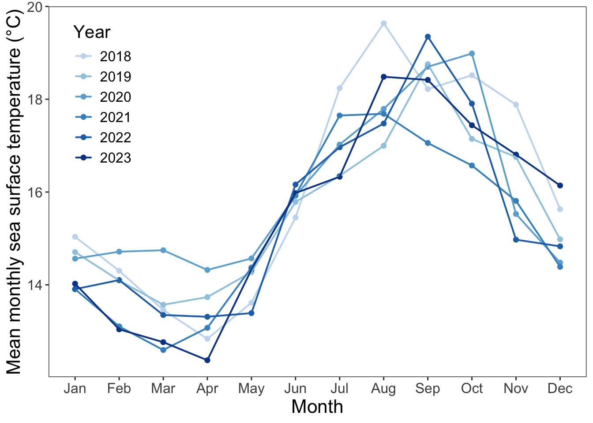

# load packages
library(tidyverse)
library(gt)
library(janitor)
library(lubridate, warn.conflicts = FALSE)
library(scales)
library(ggeffects)
library(MuMIn)
library(DHARMa)
# reading in data
sst <- read.csv("~/Git_/ENVS-193DS_spring-2025_final/Data/SST_update2023.csv")
nest_boxes <- read.csv("~/Git_/ENVS-193DS_spring-2025_final/Data/occdist.csv")ENVS-193DS Final
Github Repository
https://github.com/werickson13/ENVS-193DS_spring-2025_final.git
Problem 1. Research Writing
a. Transparent Statistical Methods
In part one, they used a Pearson’s correlation test, as the data points are continuous and correlation was brought up in the description. In part 2, they used a one-way ANOVA test, as they are comparing more than two means by one factor (nitrogen source).
b. More Information Needed
The first extra test that should be done is an Tukey’s HSD test, because the ANOVA (p = 0.02) tells us that there is a significant difference between nitrogen sources, but not which ones are the most different. The Tukey’s HSD test would test the differences seen between each nitrogen source, and tell us which groups are actually different (in the form of difference values and confidence interval boundaries), as well as adjusted p-values (for example, p<0.001) to avoid type one error.
The co-worker could also include analysis of the effect size (η²)which would give context for how much the grouping variable (sources of nitrogen) explains the response variable (average nitrogen load in kg/year).
c. Suggestions for Rewriting
Part 1: We observed a [strong, weak] [positive, negative] relationship (Pearson’s r = correlation coefficient) between distance from headwaters (km) and annual total nitrogen load (kg/year) (t(degrees of freedom) = t value, p = 0.03, ⍺ = significance level).
Part 2: We observed a [small, medium, large] difference (η² = effect size) in average nitrogen load (kg/year) between sources (urban land, atmospheric deposition, fertilizer, wastewater treatment, and grasslands)(one-way ANOVA, F(degrees of freedom between groups, degrees of freedom within groups) = F value, p = 0.02, ⍺ = significance level). On average, [source 1] tended to have less average nitrogen load than [source 2] (mean difference 1 kg/year less, 95% CI: [lower bound, upper bound] kg/year) and [source 3] (mean difference 2 kg/year less, 95% CI: [lower bound, upper bound] kg/year).
Problem 2. Data Visualization
a. Cleaning and Summarizing
sst_clean <- sst |> # use sst data frame
clean_names() |> # clean up column names
mutate(year = factor(year(date), # create factor column displaying year
levels = c(2018,2019,2020,2021,2022,2023)), # use only these six years
month = factor(month(date, label = TRUE), # sort by month
levels = month.abb, ordered = TRUE))|> # display abbreviated month names
filter(!is.na(year)) |> # removes data from unwanted years
group_by(year, month) |> # group year and month columns
summarise(mean_monthly_sst = mean(temp, na.rm = TRUE)) |> # calculate mean monthly sst
ungroup()
slice_sample(sst_clean, n = 5) # show 5 rows of data frame# A tibble: 5 × 3
year month mean_monthly_sst
<fct> <ord> <dbl>
1 2021 Dec 14.4
2 2019 Mar 13.6
3 2022 Apr 13.3
4 2020 Feb 14.7
5 2023 Dec 16.1str(sst_clean) # show data frame structuretibble [72 × 3] (S3: tbl_df/tbl/data.frame)
$ year : Factor w/ 6 levels "2018","2019",..: 1 1 1 1 1 1 1 1 1 1 ...
$ month : Ord.factor w/ 12 levels "Jan"<"Feb"<"Mar"<..: 1 2 3 4 5 6 7 8 9 10 ...
$ mean_monthly_sst: num [1:72] 15 14.3 13.5 12.8 13.6 ...b. Visualize the Data
ggplot(sst_clean, aes(x = month, # create plot with sst_clean dataframe, x = month
y = mean_monthly_sst, # y axis is mean monthly sst
group = year, # data grouped in lines by year
color = year)) +# lines colored by year
geom_point(size = 2, shape = 16, alpha = 1) + # add points to visualization
geom_line(linewidth = 0.7) + # connect points with lines
labs(
x = "Month", # set x axis title
y = "Mean monthly sea surface temperature (°C)", # set y axis title
color = "Year" # set legend title
) +
scale_color_manual(values = c( # select line colors
"2018" = "#c6dbef",
"2019" = "#9ecae1",
"2020" = "#6baed6",
"2021" = "#4292c6",
"2022" = "#2171b5",
"2023" = "#084594"
)) +
theme_bw() + # select theme with border
theme( # set font sizes, hide grids, and move legend
axis.title.x = element_text(size = 16),
axis.title.y = element_text(size = 16),
axis.text.x = element_text(size = 12),
axis.text.y = element_text(size = 12),
panel.background = element_blank(),
panel.grid.minor = element_blank(),
panel.grid.major = element_blank(),
legend.position = c(0.1,0.76),
legend.title = element_text(size = 15),
legend.text = element_text(size = 12)
)
Problem 3. Data Analysis
a. Response Variable
In this data set, 1s and 0s represent the presence (or absence) of each bird species (swift parrot, common starline, tree martin, or empty). A 1 in a column means “yes” for that observation (for example, a 1 in sp means there was a swift parrot found and a 1 in e means the box was empty) while a 0 in a column means “no” for that observation (for example, a 0 in the cs column means either a species other than the common starling was present, or it was empty.
b. Purpose of Study
Swift Parrots are a critically endangered species with preferences for specific dimensions for their nests, which are provided by nest boxes that are being taken up by other species. Tree Martins are a native species that take up these nest boxes (but overall are a subordinate competitor) and Common Starlings are an introduced species that compete for nest boxes with Swift Parrots, with anecdotal evidence suggesting they can compete by destroying eggs of the Swift Parrot.
c. Difference in “seasons”
The first “season” is 2016/2017, and the second “season” is 2019/2020. Since the boxes were placed in 2016, they were brand new to the area during the first season, and for the second season the surrounding wildlife had time to adapt and get used to their presence.
d. Table of Models
| Model Number | Season | Distance to Forest Edge | Model Description |
|---|---|---|---|
| 0 | no predictors (null model) | ||
| 1 | X | X | all predictors (saturated model) |
| 2 | X | Season predictor only | |
| 3 | X | Distance to forest edge predictor only |
e. Run the Models
model0 <- glm(sp ~ 1, # null model, formula with no predictors
data = clean_nest_boxes,
family = binomial) # use cleaned data frame
model1 <- glm(sp ~ edge_distance + season, #saturated model, use both predictors
data = clean_nest_boxes,
family = binomial) # use cleaned data frame
model2 <- glm(sp ~ season, # use only season predictor
data = clean_nest_boxes,
family = binomial) # use cleaned data frame
model3 <- glm(sp ~ edge_distance, # use only edge distance predictor
data = clean_nest_boxes,
family = binomial) # use cleaned data framef. Check the Diagnostics
plot(simulateResiduals(model0))
plot(simulateResiduals(model1))
plot(simulateResiduals(model2))
plot(simulateResiduals(model3))
g. Select the Best Model
AICc(model1, # best model: edge distance and year
model2,
model3,
model0) |>
arrange(AICc) # arrange output in descending AIC order df AICc
model1 3 226.3133
model3 2 229.6716
model2 2 236.3744
model0 1 238.8318The best model as determined by Akaike’s Information Criterion (AIC) includes how season and distance from the edge of the forest affect the probability of a Swift Parrot occupying a nest box.
h. Visualize the Model Predictions
sp_preds <- ggpredict(
model1, # choose which model to use
terms = c("edge_distance","season") # select predictors
)
sp_preds_clean <- sp_preds |> # clean column names
clean_names()
ggplot(sp_preds_clean, aes(x = x, # create plot and define axis as probability and distance from forest edge
y = predicted * 100, # y axis is predicted probability x 100 (% format)
color = group, # color by group
fill = group)) + # fill color by group
geom_ribbon(data = sp_preds_clean, alpha = 0.2, color = NA,
aes(ymin = conf_low * 100, # confidence interval boundary, adjusted for %
ymax = conf_high * 100, # confidence interval boundary, adjusted for %
fill = group
)) +
geom_point(size = 1.5, # add circular points
shape = 16) +
geom_line(size = 1) + # add line connecting points
labs(
x = "Distance From the Forest Edge (meters)",
y = "Probability of Swift Parrot Occupying Nest Box (%)",
color = "Season",
fill = "Season"
) +
scale_color_manual(values = c(
"2016" = "#008000",
"2019" = "#B7410E")) +
scale_fill_manual(values = c(
"2016" = "#008000",
"2019" = "#B7410E")) +
theme_bw() +
theme(
panel.background = element_blank(),
panel.grid = element_blank()
)I. Figure Caption
[Figure 1]: Swift Parrot nest box occupancy depending on season and distance from forest edge- Figure shows the probability that a swift parrot will occupy a nesting box (%), calculated from a generalized linear model. Green line and circles represent predicted probability that a parrot will occupy a box at x meters from the forest edge for the 2016 season. Orange line and circles represent predicted probability that a parrot will occupy a box at x meters from the forest edge for the 2019 season. Shaded ribbons represent 95% confidence interval for the respective colored lines. Graph shows that there is a nonlinear negative association between probability of occupation and distance from forest edge. Also, on average, the 2016 season had a higher probability than the 2019 season of swift parrots occupying nesting boxes. Data sourced from :Stojanovic, Dejan et al. (2021). “Do nest boxes breed the target species or its competitors? A case study of a critically endangered bird [Dataset].” Dryad. https://doi.org/10.5061/dryad.83bk3j9sb